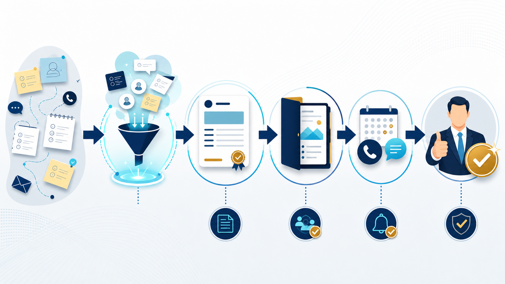

SALES OPERATIONS / EFFICIENCY
営業効率化の方法｜見積・提案・追客のどこからAI化するか
営業効率化は、営業担当者の行動を一括で自動化することではありません。見積、提案、追客、報告を分け、顧客接点のリスクが低い工程から整えます。

営業効率化は「顧客接点」と「社内作業」を分けて考える
営業の工程を一つの業務として見ると、どこを改善すべきか分かりません。顧客へ直接届く文章や金額は確認の重さが高く、社内報告や下書きは比較的試しやすい領域です。定型度と顧客接点リスクの2軸で並べます。
| 工程 | 定型度 | 最初の改善案 |
|---|---|---|
| 営業報告 | 高い | 入力項目を減らし、要約を補助 |
| 見積作成 | 高〜中 | 商品・単価の転記を整える |
| 提案書 | 中 | 素材の整理と構成案を作る |
| 追客 | 中 | 候補抽出と文面の下書き |
| 顧客への送信 | 低〜中 | 人の承認を必須にする |
最初にAI化しやすい営業業務4つ
営業報告
商談メモから、決まった項目へ整理する。
見積の下書き
条件を拾い、確認用の案を作る。
提案構成
顧客課題と素材を整理し、章立てを作る。
見積の工数が大きい場合は、見積書作成の時間を減らす方法で現状を先に測ります。営業効率化のツールは、工程を変える前に入力形式をそろえると効果を確認しやすくなります。
現場で回る改善は4ステップで作る
- 現状の手順を撮る：画面、転記、確認、送信の順番を書き出す。
- 不要な入力を減らす：同じ情報を複数画面へ入れない。
- AIは下書きに置く：顧客へ出す前に担当者が承認する。
- 例外を記録する：うまくいかなかった案件も手順へ戻す。
営業担当者に新しい入力を増やすだけでは、効率化になりません。既存の報告や見積の中から、重複する作業を一つ減らす設計にします。
成果は受注率より先に「時間と漏れ」を測る
営業効率化の初期評価では、売上や受注率だけを見ると外部要因が大きすぎます。1件あたりの作業時間、見積提出までの時間、未対応の件数、差し戻し回数を導入前後で比べます。改善した時間を顧客対応へ戻せたかも確認します。
AI導入全体の費用対効果まで判断する場合は、AI導入の費用対効果で悲観・標準・楽観の3ケースを分けて試算します。
営業現場での導入例を工程ごとに分ける
営業担当者の負担を減らすときは、「AIに営業をさせる」と考えず、工程ごとの補助にします。商談後のメモ整理、見積条件の抜け確認、提案書の章立て、追客候補の抽出を分けると、どこで人の判断が必要かが明確になります。
| 工程 | AIに任せる補助 | 人が確定すること |
|---|---|---|
| 商談後 | メモの要約・論点抽出 | 顧客の意向と次回アクション |
| 見積 | 条件の整理・下書き | 金額、納期、契約条件 |
| 提案 | 構成案と素材の整理 | 提案の妥当性と表現 |
| 追客 | 候補の抽出・文面案 | 送る相手、タイミング、内容 |
追客を自動化しすぎないための境界
追客は顧客との関係に直結するため、最初は候補抽出と文面の下書きまでに留めます。過去のやり取りだけで顧客の温度感を決めつけず、担当者が最新の状況を確認してから送信します。
営業報告の入力がそろっていない場合は、AIを追加する前に項目を減らします。入力を増やすだけの効率化は定着しません。まずは工数シミュレーターで、どの工程が重いかを確認してください。
営業責任者が見るべき改善指標
営業効率化の効果は、担当者の感想だけでなく、チームの流れで確認します。見積提出までの時間、対応漏れ、差し戻し、顧客へ戻せた時間を週次で見て、AIを使った件数だけを成果にしないことが重要です。
| 指標 | 何が分かるか | 悪化したときの見直し |
|---|---|---|
| 見積提出まで | 社内の待ち時間 | 承認・情報不足 |
| 差し戻し | 入力・条件の不備 | マスター・チェック項目 |
| 未対応件数 | 追客の漏れ | 候補抽出と担当割り当て |
営業担当者が使い続けられる引き継ぎ
営業担当者が変わっても同じ品質で使えるように、入力例、確認項目、顧客へ送ってはいけない出力例を残します。経験者だけが調整できるプロンプトや手順は、業務システムへ組み込む前に共有可能な書式へ変換します。
AI導入の費用対効果は、ROIの試算で確認工数まで含めます。まずは見積書AIデモのような下書き工程から、営業の実務へ接続してください。
営業チームの週次レビューに入れる
営業効率化は、ツール導入の担当者だけで評価しません。営業、上長、見積や経理など、前後の工程を持つ人が、詰まりと改善を一緒に見ます。
- 商談メモの入力漏れ
- 見積条件の確認待ち
- 提案書の修正回数
- 追客の未対応件数
- 顧客対応へ戻せた時間
指標が悪化した場合は、AIの性能だけを責めず、入力形式や承認者、顧客情報の扱いを見直します。見積工程を分けて改善すると、営業全体の負担が見えやすくなります。
よくある質問
営業担当者にAIを使わせるだけで効率化できますか？
ツールを渡すだけでは定着しません。使う工程、入力の型、確認者、成果の測り方を決め、既存の報告や見積の負担を一つ減らす設計が必要です。
顧客へのメールをAIに自動送信してもよいですか？
誤送信や条件違いのリスクがあるため、最初は下書きまでに留めます。宛先、金額、納期、固有名詞を人が確認する承認工程を残してください。